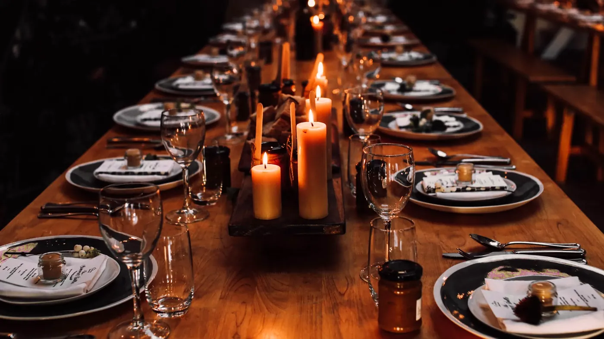
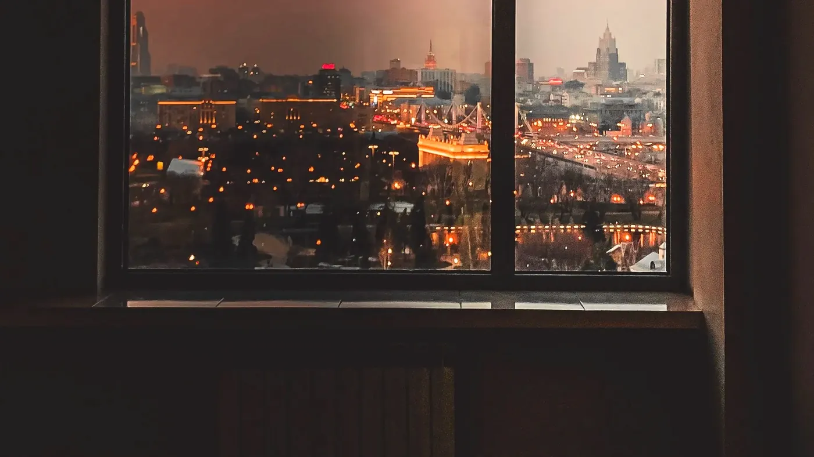
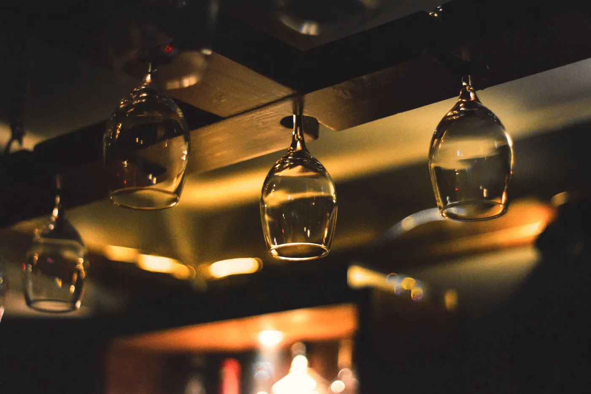
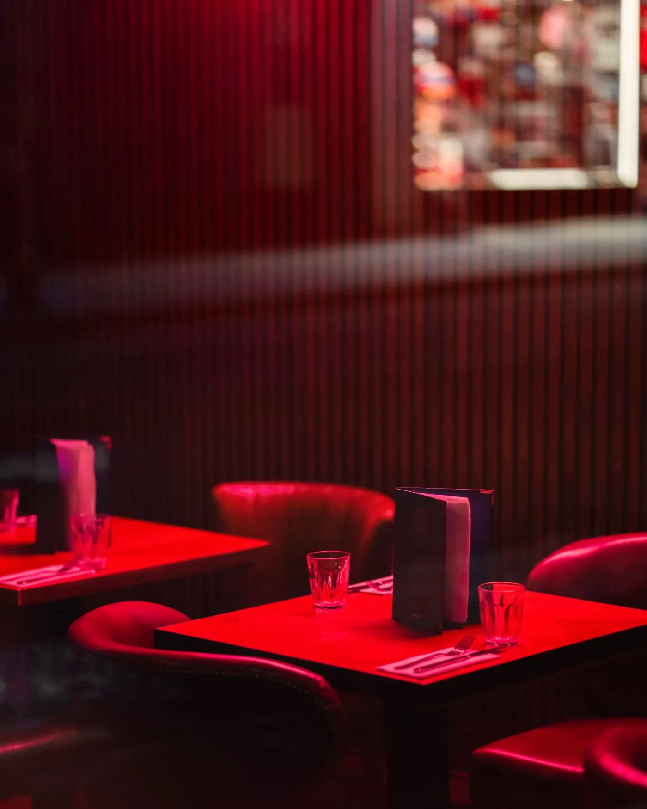

You won’t find whose party it was here, or where. Rooms are named by what they are and what’s difficult about them. Each photograph shows that kind of room and belongs to the person credited under it.
Photograph — Novirina, Pexels licence. Not a Late Room event.
A basement, low ceiling
lit from the table up
A low ceiling is a gift once you stop fighting it. I turn the overheads off and keep every lamp at table height, so the ceiling disappears and people lean in.
I put the bar where the queue would form anyway.
A cellar, one way in
and the same way out
One stair in and the same stair out means the room’s rules on numbers come first. I ask for them at the start and plan the night backwards from what they say. The fire marshal’s figure is not a suggestion, and it isn’t mine to change.
I ask the room how many before I ask you who.

Photograph — Rachel Claire, Pexels licence. Not a Late Room event.
A long room, one table
nowhere to hide
One table down the length of a room is the best seating plan there is and the most unforgiving. Candles low enough to talk over, chairs close enough to be slightly rude, and the bar at the far end so people have somewhere to walk to.
A long table is a dare. Seat the loud ones in the middle.
Photograph — Chris F, Pexels licence. Not a Late Room event.
A service corridor
the real way in
Every crate, every lamp and every late delivery comes through here. If the back way is narrow, that decides what the front of the room can be, so it’s the first thing I look at and nobody ever asks to see it.
I walk the back way before I walk the front.

Photograph — Alexander Igrevsky, Pexels licence. Not a Late Room event.
A top floor, no lift
the city does the rest
Everyone arrives slightly out of breath and slightly pleased with themselves. I leave the window alone and keep the inside darker than the view. No lift is a conversation about access first, and I have it with the room before anything else gets planned.
You don’t decorate a view. You get out of its way.
A floor nobody’s on yet
the hardest room there is
An empty dance floor with the lights on is the loneliest thing at a party. I don’t announce it. I keep tables on it until they’re in the way, then take them off and let people find it for themselves.
Never let it look like a floor until someone’s already dancing on it.

Photograph — Zain Ali, Pexels licence. Not a Late Room event.
A bar that isn’t mine
and its people
Every bar I work with belongs to the room, and so does its licence and its team. My job is where it stands, how it looks and how fast people can reach it. I talk to the room’s bar manager early, and I listen, because they know their room.
The best person in any room is the one running its bar. Ask them anything.

Photograph — Jagjeet Dhuna, Pexels licence. Not a Late Room event.
A room that’s already red
so leave it alone
Some rooms have made up their minds. When the walls, the seats and the light already agree with each other, the expensive thing to do is nothing. I change where people stand and leave the room to get on with it.
A lot of my job is knowing when to put the toolbox down.
Photograph — Jonathan Borba, Pexels licence. Not a Late Room event.
A private room upstairs
the ones you meant
A private dinner lives or dies on the light at face height. Lots of small flames, no overhead, and glass that throws it around the table. Everything else is the kitchen’s, and I leave it to them.
Nobody looks bad by candlelight. That’s not an accident.
The same room, at the end
chairs stacked, lights up
This is the picture nobody publishes: the room after everyone has gone, with the crew taking it apart. Who strikes it, by when, and what state it goes back in are agreed with the room before the night, and I walk it with them before I leave.
If you want to know how good a studio is, ask to see the room at the end.